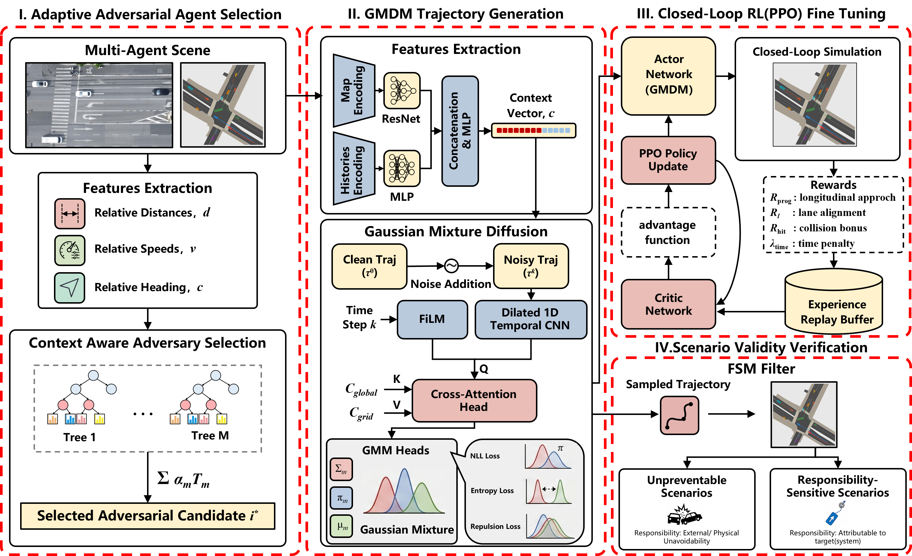
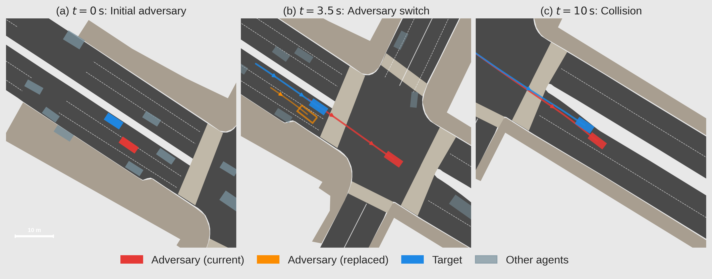
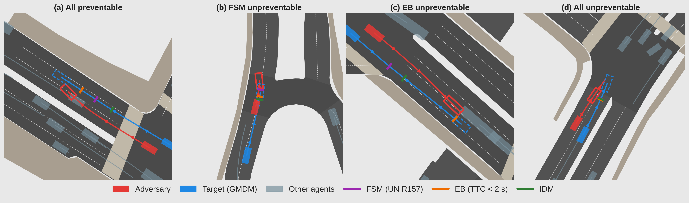
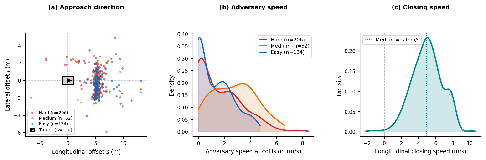

CARS Pipeline. The adversary (adv) is controlled by the CARS policy, which combines a diffusion backbone with a Gaussian mixture output head. PPO fine-tunes the policy toward safety-critical interactions while preserving multi-modal kinematic realism. A context-aware selection module identifies the most threatening adversary; a CCDM filter retains only scenarios attributable to the target (tgt).
Rollout episodes replayed frame-by-frame from recorded HDF5 trajectories on the nuScenes Boston-Seaport map. All agents move exactly as recorded — no controller simulation.

Context-aware adversary switching. The adversary role dynamically transfers between agents mid-episode based on the context-aware selection module, maintaining a coherent and effective threat to the target vehicle.

Roller-coaster re-simulation. Illustrating the four validity outcomes across representative nuScenes episodes. Each controller (FSM / EB / IDM) re-simulates the target along its original path with braking only, determining whether the collision is the responsibility of the AD system under test.
Statistical characterisation of collision geometry and kinematics across all 408 scenarios.

(a) Adversary position in target reference frame at collision — coloured by FSM criticality. (b) Adversary speed KDE at collision instant. (c) Longitudinal closing speed KDE; positive = adversary approaching.
Comparison of CARS against ablation baselines across key safety-critical metrics.
| Model | Episodes | CR (%) | Hard% ↑ | TTCmin median (s) ↓ | FSM preventable (%) | Speed@col (m/s) |
|---|---|---|---|---|---|---|
| CARS K=8 Ours | 408 | 100.0 | 52.7 | 1.47 | 98.8 | 1.81 |
| GMD K=1 target | 180 | 100.0 | 38.3 | 1.52 | 98.9 | — |
| CARS + CTG target | 315 | 97.5 | 49.5 | — | — | 7.19 |
CR = Collision Rate · Hard% = fraction of FSM-Hard scenarios · ↑/↓ = higher/lower is better